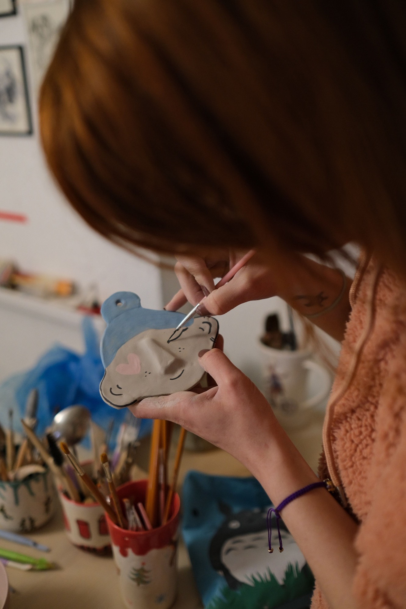
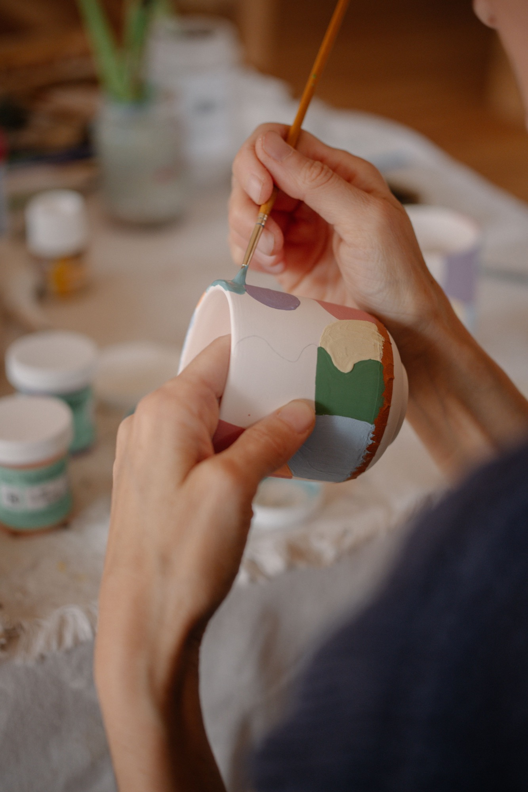
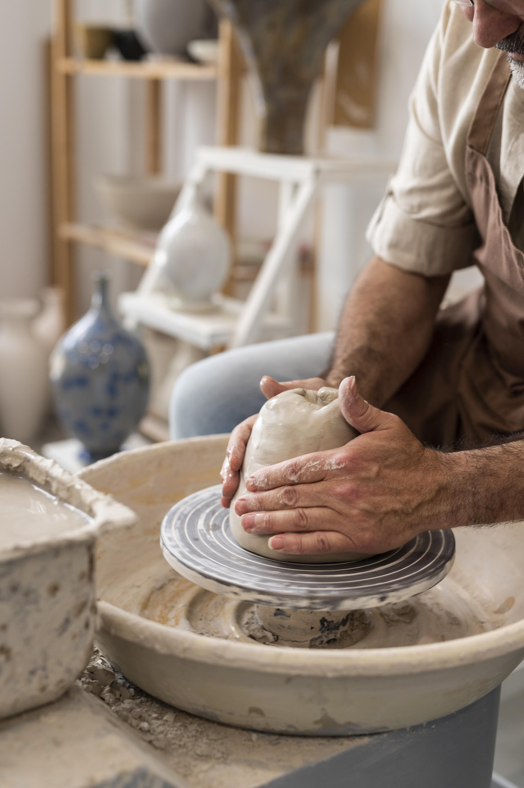

Le temps.
La terre. Et vous.
Un atelier de céramique où l’on prend le temps de créer, d’expérimenter et de revenir à l’essentiel.
Offrir un atelierCartes cadeaux dès 55 € · Bordeaux, Les Chartrons
4,8/5 · 286 avis Google
Bordeaux · Quartier des Chartrons
En petit groupe · 8 personnes maximum
Nos offres
Pour un premier essai, un week-end ou une nouvelle passion.
Faites défiler les offres horizontalement.


Notre concept
Vous choisissez
Une formule, une ou plusieurs personnes : composez votre cadeau.
Vous offrez
Un moment pour découvrir la matière, prendre son temps et créer.
On façonne
À l’atelier, nos céramistes accompagnent les premiers gestes.
Le plus beau cadeau ?
Un moment à soi.
Choisir ma carte cadeau Et le plaisir de faire quelque chose de ses mains.
Votre cadeau, à votre façon
On prépare
sa parenthèse ?
Choisissez votre formule et le nombre de personnes. Le montant s’ajuste à votre sélection.
Notre communauté s’exprime
★★★★★
La confiance des personnes passées à l’atelier.
Exemples d’avis fictifs · Illustrations inspirées des personas du brief, à remplacer par de vrais témoignages.
Camille, 34 ans
Initiation au tour
Une pause après le travail
« Je n’avais jamais touché un tour de potier. Les gestes expliqués pas à pas m’ont permis de me lancer sans pression. Pendant deux heures et demie, j’ai complètement décroché du quotidien. »
Bernard, 67 ans
Cycle trimestriel
Le plaisir d’apprendre à son rythme
« Je cherchais une activité régulière pour découvrir quelque chose de nouveau. Au fil des séances, je prends confiance et je vois mes progrès. Le petit groupe laisse le temps de poser ses questions. »
Sophie, 41 ans
Atelier d’équipe
Un moment à partager en équipe
« Nous voulions sortir du cadre habituel du bureau. Façonner la terre ensemble a créé des échanges différents, même entre collègues qui se connaissent peu. Une belle idée pour se retrouver autrement. »
Où sommes-nous ?
Au cœur des Chartrons à Bordeaux, découvrez notre atelier de céramique de 160 m², un lieu chaleureux dédié à la création et au partage.
Et bientôt, 90 m² supplémentaires dédiés aux groupes et aux stages vous accueilleront dès janvier 2027 !
Bordeaux · Quartier des Chartrons. Adresse exacte de l’atelier à confirmer.
Explorer le quartier sur la carteUne petite question avant d’offrir ?
L’atelier vous accueille du mardi au samedi, de 10 h à 19 h. Nous sommes fermés le dimanche et le lundi.
Pas du tout. Les initiations sont conçues pour découvrir le tour ou le modelage, avec l’accompagnement d’un céramiste.
Les modalités de réception seront précisées par l’atelier à l’ouverture de la vente en ligne. Le simulateur permet pour le moment de préparer votre sélection.
Les conditions de modification, d’annulation et de validité seront précisées dans les conditions générales de vente avant l’ouverture des achats.